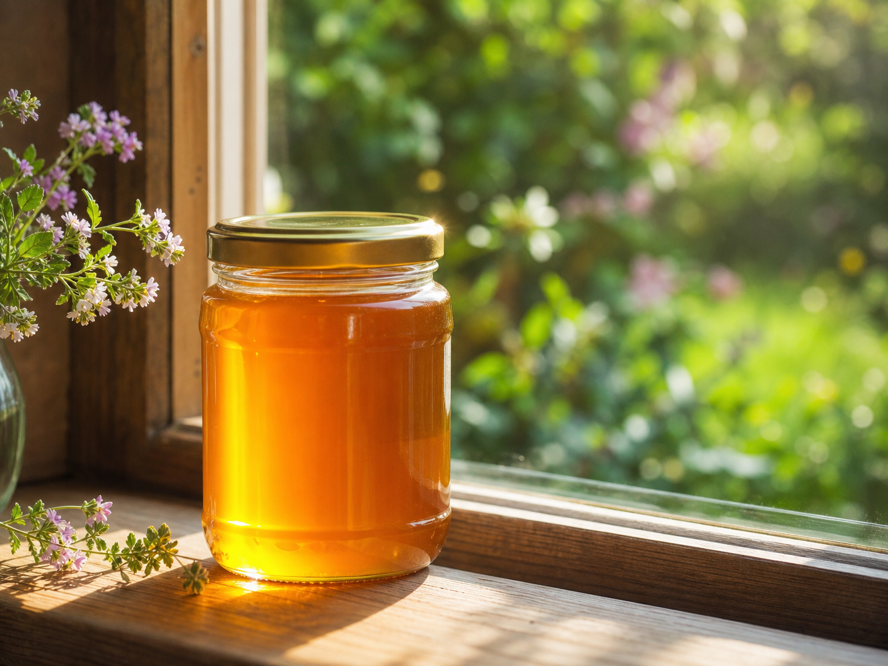

Prečo sa slovenskí seniori vracajú k tomuto rituálu?

ZISTIŤ VIAC O RITUÁLIV poslednej dobe sa na Slovensku objavil fascinujúci trend. Tisíce ľudí nad 60 rokov začali do svojej rannej rutiny zaraďovať niečo, čo nazývajú "zlatý mechanizmus". Nejde o žiadnu modernú chémiu, ale o návrat k čistému, prírodnému zdroju, ktorý bol po desaťročia prehliadaný.
Tento rituál je založený na unikátnych vlastnostiach prírodného extraktu, ktorý pri správnom použití dokáže podporiť prirodzenú vitalitu tela. Odborníci na naturálnu medicínu vysvetľujú, že kľúčom nie je samotná látka, ale spôsob, akým interaguje s naším organizmom v ranných hodinách.
Mnohí používatelia uvádzajú, že sa cítia viac sústredení a majú viac energie na svoje koníčky, či už ide o prácu v záhrade, čítanie alebo trávenie času s vnúčatami. Všetko bez potreby umelých stimulantov.
ZISTIŤ VIAC O RITUÁLI